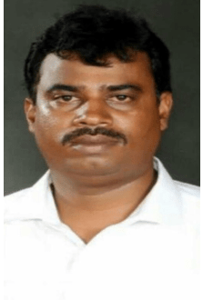
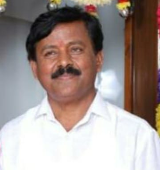
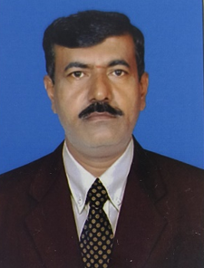

About the Institution
Vision
To provide quality education to students coming from all strata of the society. To shape the life of each student for a better future.
Mission
To create technologically upgraded institution which caters to the educational standards of today’s times.
college Development committee
President – Shri S R Vishwanath
MLA, Yelahanka | Member, TTD Board | Former Chairman, Bangalore Development Authority (BDA)

Vice-president – R M Somashekar Reddy
Businessman
Treasurer – RC Rajendra Kumar
B.Pharm, Social Worker.
Board of Members

Shri. M Manjunath
Edu - BA

Shri Shivanna N C
Edu – MA, M.Phil
Rtd.Principal
Shri.M MohanKumar
Edu - Dip civil
Shri M Thimma Reddy
Edu - BSC, B.Ed
Principals
Incharge Pricipal Of PU college:
V R Manjula
Edu - M.A,M.Phil
Teaching experience – 17 years
Joining date – 05/11/2007
Principal Of High school:
Kantaruju B G
Edu – MSc, M.Ed, KES
Teaching experience – 17 years
Joining date – 15/06/2007

Incharge Pricipal Of Primary School:
SREENIVASA G
Edu – CPEd, Kan& Eng Sr typing, PUC
Teaching experience – 29 years
Joining date – 26/07/1994